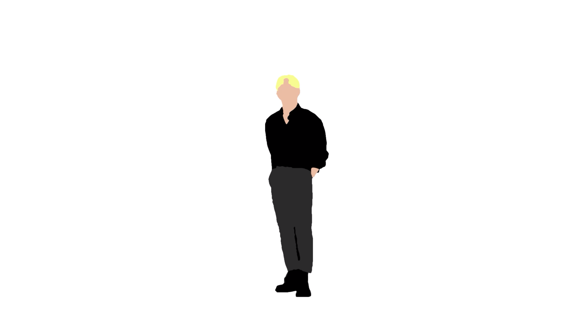

3D Solar System

3D rendering of planets — simulating textures, lighting, and atmospheric effects to depict celestial bodies with scientific accuracy and artistic depth.
1-minute Video Rotoscope

Frame-by-frame tracing over footage to isolate subjects and build visual effects — background removal, motion tracking, and stylized animation.